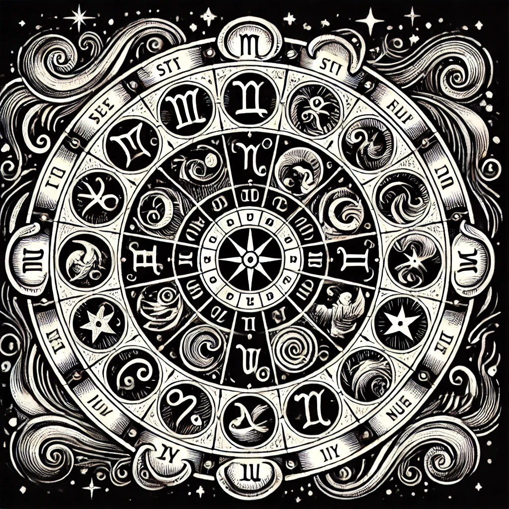

Dynamic, determined, and confident, Aries is a natural leader.
Health: Aries 2024
Good energy flow throughout the year, but watch out for stress in early summer.
Finance: Aries 2024
Stable growth with a promising investment opportunity in late autumn.
Love: Aries 2024
Romantic highs in spring, focus on communication to avoid conflicts in November.